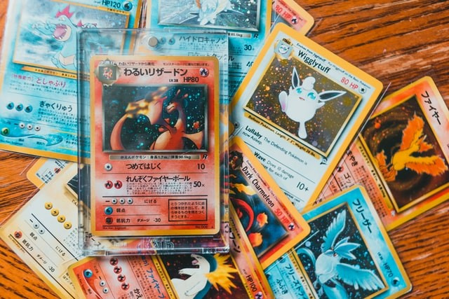
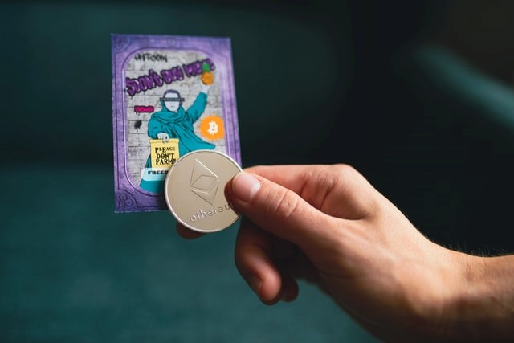
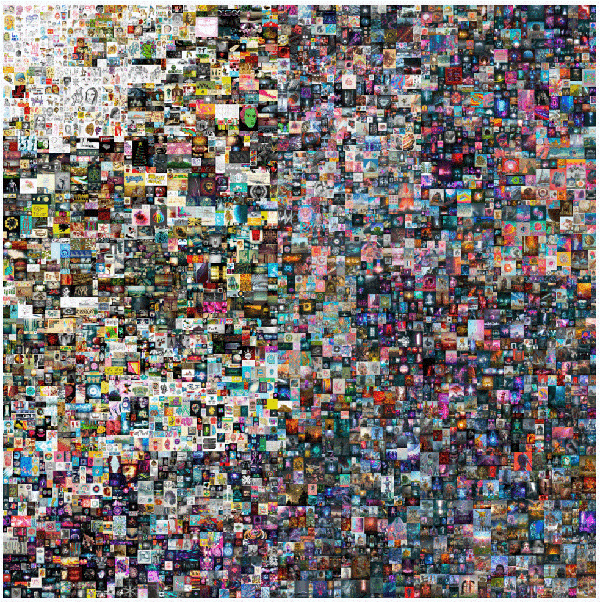

ACCUEIL
Introduction sur les cartes à collectioner
Depuis les années 90, les cartes à collectionner ont connu un essor, et sont devenu populaire comme par exemple les cartes Magic
sorti en 1993.

Impact crise sanitaire sur les cartes à collectionner
Cependant, plus récemment, avec la crise sanitaire, l’intérêt pour
les cartes à collectionner a augmenté notamment grâce aux influenceurs que ce soit par les
plateformes de streaming comme « YouTube », « Twitch » ou tout simplement par les réseaux sociaux «
Instagram », « Tiktok » …
Beaucoup de personnes s’y sont intéressés, c’est pourquoi actuellement, il y a une si grande tendance autour de ces cartes.
Le développement des NFT’s
Nonobstant, cette mode ne se retrouve pas seulement sur les cartes physiques mais aussi sur tout ce qui est
digitale avec les NFT’s qui ont connu un développement exponentiel.
Ainsi, nous allons définir qu’est-ce que les NFT.

Définition simple de ce qu’est qu’une NFT, la blockchain et une cryptomonnaie mais aussi le lien
entre chaque terme
« Non fungible tokens », que l’on peut traduire par « jetons non fongibles », sont des éléments cryptographiques et
virtuels sur la blockchain avec des codes d'identification uniques et des métadonnées (auteur,
signature, date, type...) qui les distinguent les uns des autres. Ainsi, la
Blockchain est constituée d’informations numériques,le
bloc, stockés dans une base de données publique, qui est la
chaîne. La Blockchain est essentielle dans le marché des
NFT car elle permet de pouvoir faire des transactions en cryptomonnaies entre les
différents protagonistes de ce processus.
Maintenant qu’est-ce qu’une cryptomonnaie.
La cryptomonnaie est un moyen de paiement virtuel utilisable
essentiellement sur Internet, s'appuyant sur la cryptographie pour sécuriser les transactions et la création d'unités, échappant à tout contrôle
des régulateurs et des banques centrales. Elle est utilisée pour les transactions dans la
Blockchain, la plus connue actuellement dans les NFT est l’Etherum.

Histoire des NFTs
L'homme qui a créé la première NFT se nomme Kevin McCoy, il l’a
conçu le 3 mai 2014. Il l’a appelé« Quantum », Quantum est une image
pixélisée d'un octogone rempli de cercles, d'arcs ou d'autres formes qui partagent le même centre,
avec des formes plus grandes entourant les plus petites et pulsant hypnotiquement dans des teintes
fluorescentes.
De ce fait, le marché du NFT n’est pas si récent, il existe depuis 2014 mais il aexplosé à partir des années 2018-2021.
Le succès des NFT’s
Ces dernières années, le marché des NFT a pris uneampleur considérable. Les ventes ont explosé au
premier semestre à 2,47 milliards de dollars, contre à peine 13,7 millions de dollars sur
la même période un an plus tôt. Le marché est passé de 40 à 338 millions de dollars entre 2018 et
2020. Et il génère chaque jour plus de 10 millions de dollars dans des galeries virtuelles. À
l’heure actuelle, le marché des jetons non fongibles pèse environ 15,8
milliards de dollars.
NFT la plus chère
Un NFT de l'artiste Beeple, de son véritable nom Mike Winkelmann, vient de trouver un acquéreur pour exactement 69 346 250 de dollars, un nouveau record
historique qui place la barre très haute. Légende du monde des NFT’s, cette création de
Beeple constitue l'ensemble d'œuvres le plus célèbre de l'histoire de l'art numérique, d'où
l'envolée de son prix.

Les plateformes où l’on peut trouver des NFT’s
Ainsi, les NFT’s sont principalement présents sur 3 plateformes. Les plus prisées par les artistes
sont OpenSea, Nifty Gateway, Hic et Nunc.
L’art NFT non éphémère
L’avenir des NFT ne se dessine pas comme non éphémère. Premièrement, l’aspect communautaire est très fort dans le crypto-art, justifiant
ainsi, en partie, la popularité de ses œuvres. Il y a également, que
les collections d’art NFTs permettent une identification à des
valeurs, des projets communs à l’émergence d’un entre-soi. Pour finir, la technologie NFT
va s’imposer dans le monde de l’art en raison de la traçabilité
des garanties d’authenticité qu’elle peut fournir tant à des biens
matériels qu’immatériels.
Les avantages des NFT’s pour un artiste
Pour un artiste, un NFT permet de placer un marqueur unique et infalsifiable sur sa création, stipulant qu’il s’agit bien là de
l'œuvre « originale » parmi les copies qui circuleront et resteront à
disposition de tous sur le web. Une distinction essentielle puisqu’elle introduit de la rareté et
facilite une vente potentielle : l’acheteur a la garantie d’acquérir
un bien « unique ». Les NFT offrent un autre atout non négligeable : les artistes touchent un pourcentage systématique sur les reventes, un « droit de suite » qui s’élève généralement à 10%.
Malencontreusement, il y a beaucoup de débat sur les NFT, notamment
par rapport à la communauté artistique ce qui nous amène à la
problématique suivante.
PROBLEMATIQUE
En quoi les NFT’s font polémique et fractionnent la communauté artistique ?